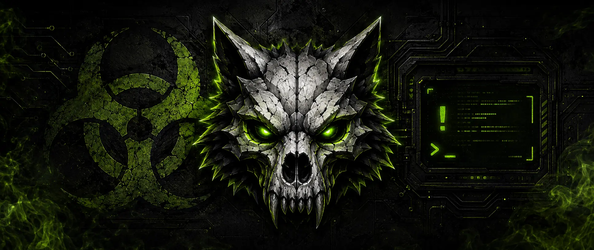

⁅𝐓𝐡𝐲𝐓☣︎𝐱𝐢𝐜𝐆𝐚𝐦𝐞𝐫⁆
Poll Creator
Build the decision. Release it to chat. Let the contamination decide.
Checking access

Protected creator
Verifying your temporary access...
The creator opens only from a private link issued through Streamer.bot.
Access unavailable
This creator link is missing or expired
Use !pollpanel in Twitch chat to request a fresh private link.
Creator demo mode
You can test every control, but this preview will not post to Twitch or save votes.
Currently live
Active 𝐓☣︎𝐱𝐢c Polls
Up to three polls can run at the same time.
Poll released